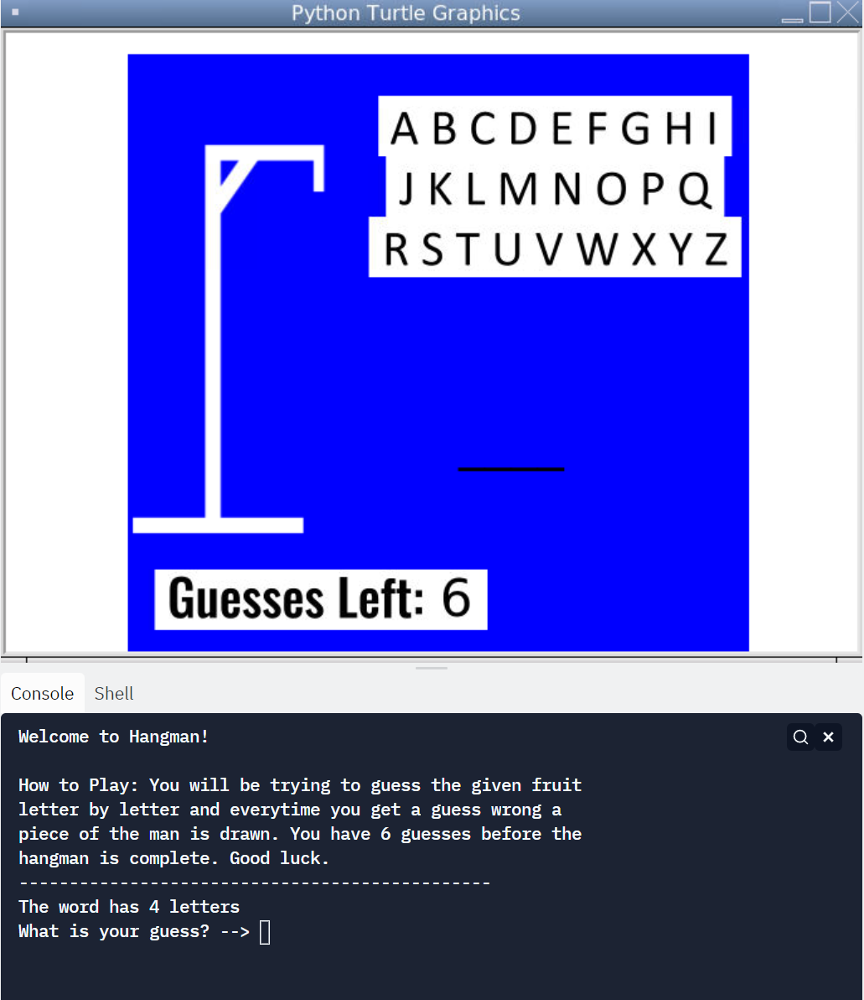
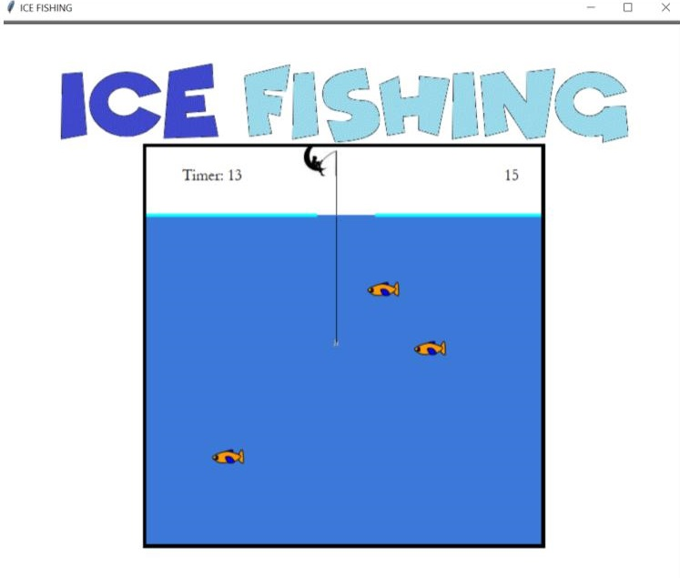
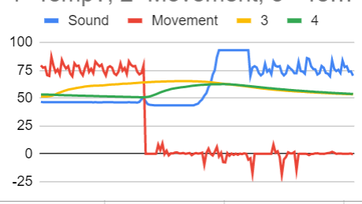

Home
Portfolio
About Me
This is my Portfolio Page!
Project One
Hangman

For our first project we decided to make hangman. We made a list of words that the program would randomly
select for the player to try to guess. The player would input his/her guess into the console and depending on the
guess the program would react differently. If the guess is wrong, the guesses value would go down by one and the
hangman would slowly begin to get drawn in. If the guess is correct, the program will slowly draw the words as you
get closer to the answer. At the end there is a win/loss screen which features a text box and an animated floating
face.
Project Two
Ice Fishing

For our second project we made ice Fishing. At the start it prompts the player for a name and then loads in 5
fish at random locations out of the border to the right. It then loads in the fishing hook that can be controlled
through the up and down arrow keys. The fish swim to the left and are deleted when hitting the left border or the
hook. Whenever it is deleted, a new fish will be randomly spawned to take its place. Every fish caught contributes
to 5 points of the player's score. There is also a timer that will clear the screen and pull up a leader board
after finishing.
Project Three
Scratch Undertale Remix
For our third project, we made a scratch game. We decided to make a remix of the popular game undertale. When
you start the game you have to dodge water balls for as long as you can. The more you get hit, the more points and
health you lose. If you run out of health, the game ends.
Project Four
PLTW 3.1.6 Rover Project

For our third project, we were given 4 sets of data that simulated environmental recordings of a robot on an alien
planet. Our objective was to try to guess which region the robot was in based on general descriptions of temperature,
movement, sound, and light for each biome. We graphed the data and tried to guess which data sets correlated to which
sensor. We knew that none of the listed regions would hit temperatures below 0 so we assumed that only movement could
reach the negatives, so we defined that set as movement. The other data set we defined was sound as the graph showed
ambient noise as well as sudden spikes of sound and tones. The other 2 we weren't sure of was temperature and light
so we put them hand in hand. Based on our data we guessed that the robot is in the inland forests.